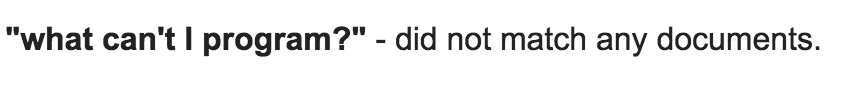

I like my gem. I feel fairly proud of it. I don’t know if it's all that great in the grand scheme of things, but I put in a lot of hours. I’m sure the code could be better and cleaner, but it works and it works exactly how I envisioned it. That said, the project did not get off to a good start. The holidays, which for various reasons lasted well into this week, felt like a endurance contest that consisted of jumping between family and friends in different states (both geographic and mental) and dodging social gatherings whenever possible in order to get my final projects done. After dragging myself through an oddly sweltering December and a freezing start to January, I finally got to sit down and watch my football games and look forward to a (hopefully quieter) new year. I look back on my notes for this CLI gem project and at the very top of the page I see:
I’m sure I could have written a whole lot of worse things that evening, but instead I got back to work, and I’m glad I did. I now have my first (somewhat?) useful program. And a new website I made almost by accident just so I could have something to break the monotony!
This is actually my first blog post. As the title suggests, I'm required to submit a blog post (and a video) detailing my experience in building this gem. I will include the video with this post. As for the blog I thought it might be fun to recreate the posts I might have blogged from my notes over the course of the week. I actually intend to do a lot of this backward blogging in the future to kind of give myself a point of reference from where I started with this coding adventure.
Anything after the following video is recreated from my notes and not actually a present day blog post proper.
To sum up the process and project all I can say is the process was challenging and it took much longer than I expected, but the project itself was interesting and totally worth it. One thing I learned is I like working on more than one project at a time; switching keeps each of them fresh and fun. When I work on only one I think I work less hours total, but I do worry that for the purposes of having a job this might not be the best way to work. I guess I'll find out.
I needed a break from the gem so I'm working on coding up my personal site so I can post my blog stuff for the assessment.
I finished a dynamic layout for home page, and designed a blog page but didn't code it, then switched projects again after lunch. I'm now trying to straighten out my gem for publishing.
Turned out that the Gemspec file was tricky and I forgot to gem build ('gem build sommeligem.gemspec'), but Vincent from Learn helped out and...
IT’S WORKING!
Just need to clean up a few bugs and do my video and blog posts.
Worked out my hashes. Food => Wine and Wine => Food had to be done seperately because simply reversing the info wouldn't work for the context of the CLI. I also got my #wine_to_food pairing method working.
Not much going on today but building the CLI for my gem, need to build pairing method next.
One cool thought: 'The question isn’t: what can I program? The question is: what can’t I program?' ™
For the hell of it I put that into google and I thought the result was funny. I wonder if it's intentional:
I worked about 8 hours today but it felt like a lot longer:
I started by setting up to screen capture my coding for this gem. I found that naming this thing is harder than I thought, and I can't start until I set up a repo with the name. I think I'm leaning toward “sommeligem”
Ok fine "sommeligem" it is. It definitely says what the thing is supposed to do, but I fear that it will read like "smelly-gem" to some. Meh. Set up repo and submitted.
I started my coding video but I ran into problems with scraping. I think it’s because of something called “aria”. I just can't get the right css selectors. Tried to do a bunch of research but still fighting it.
After speaking with someone from Learn, it turned out they couldn’t scrape that site either. It looked to both of us as if the data wasn't actually on the page. Apparently I have to start over ☹.
Success! I found another site that will serve! Unfortunately, I will have to change some of the original outline for my gem as this site has different info and only has 1 available year of top 100s.
Second coding video went much better
I did some good coding in my bathtub today. Do I want to reveal this? ...too late. It popped into my head to call my portfolio/blog “Design. Program. Rinse. Repeat.”
I took a little bit of time to draw up an artboard for the home page of my personal website. I know this is probably a distraction but I feel the need to strike while the iron is hot sometimes. And I want something that looks very simple anyway.
Got back to scraping for CLI gem project (wine) of which there seems to be a whole lot.
Around 7pm I finished my scraper class (well, finished in terms of function but my code is a little messy). I had a rough time with one of the categories because my selector was picking up the span I wanted but also the span after it, and screwing up my iterating. It took me forever to figure out that I wanted “:first-child” but it rocked when I finally got it to work. Hash is built correctly and now I have to use it to build my CLI.
Today felt like a longer day than it was but it was worth it.
I spent a couple hours after the game reading about gems and trying to figure out what kind of gem I want to build. I looked at Avi’s gem ('now-playing') while drinking a glass of wine, and I think I’m going to go with something similar but regarding wine rather than movies. Came up with the following so far:
Titles: TopWinesGem or SomGem
It scrapes the Wine Spectator (http://2015.top100.winespectator.com) site for the info needed to perform the following:
It displays all the different wines on the list in order from 1-100.
It isolates the name from the grape.
The user can choose more info on any of the wines 1–100 (be careful some years there are ties..you will have to be clear about... 64. Rank: 64, 65. Rank: 64 ...when it comes to user input.)
Choosing a wine will provide a desciption, price, rating and vintage. Alternatively the user can choose the pairing option in which they can pare down the list by a food group. Say if the user chooses "red meat" or "beef" the list will redisplay with the wines that match the varietals I associate it with.
BONUS: Can they then select from that pared down list for details? Also, hypothetically, we could add lists for different years.(might be able to do this simply by changing the year in the URL.)
Note to self: Draw out a Hash?, array? hashes? Something like:
[{:rank => 2, :name => "Black Box", :varietal => "Red Blend" :details => [price, rating, vintage]},{}]
The last four days have been almost all HTML and CSS. There were lots of videos and codealongs, followed by instructions on how to use a template for building websites called bootstrap. Most of my knowledge of these languages has come back now, and I’m glad to say it has been expanded a bit with regards to positioning and especially in responsive CSS, which, I have to admit, produces some cool results.
Although CSS is still not my favorite thing in the world I will admit that it is much much less painful now than it was a week ago.
I also got to watch Avi do a lecture on how the web works and on the Sinatra ruby gem. It was cool to see him pull down some info using the Twitter API. I get excited about how one can get data and what you can do with it when I see things like this.
I had orientation today and Avi seemed to think that writing is VERY important. Which make me pretty glad I’ve been keeping these notes everyday.
After that, I finished off the HTML and CSS section with a small codealong about using prebuilt Javascript for an image carousel, which was something I remember doing lot of in my Parsons years.
The long and the short of it is that tomorrow I get to go back to working with Ruby. Free at last!
I started today working on basic git functions. I finished the learn “prework”, with the exception of a minor code along concerning stuff I’ve already learned and the final advanced hashes exercise called “alphabetize in Esperanto”. When I tried to work on that the ‘open’ button on the learn site stopped working. I sent in the issue, and debugged with Mat from the Learn team. My Learn app had disconnected but stayed open so I didn’t realize I’d been disconnected.
In other news, the lesson of today is: don’t forget to write pseudo code! The Esperanto lab was stumping me big time, but when I wrote out the pseudo code the answer was right there!
This afternoon I officially enrolled! I went out and had a couple beers to celebrate…which, for the record, did not help my coding this evening.
Later on, I worked with more git stuff, probably stuff I should have known before those quizzes the other day.
I finished the day with more HTML and CSS. As much as it hurts, it’s probably better I force it into my head early on. Plus it’s really just a review for me. I’m waking up parts of my brain I stored this stuff in 5 years ago.
I have spent too much time today hating on CSS. Positioning makes me crazy. ‘Float’ is the current culprit. Thankfully, there was a good tutorial on learn that cleared up a lot. I wish this tutorial came before the last exercise, it would have made it a lot easier, but then again sometimes when you struggle with something you learn it better.
Moved on to Git stuff. The walkthrough was good, but it wasn’t enough info to pass the quiz at the end of the section. Fortunately, it was mostly easy to figure out on my own.
As a side note it turns out that a lot of people feel the same about CSS.
Lots of us on Learn's slack channel really miss Ruby during this section. For my two cents, using Ruby feels like problem solving similar to a word puzzle or a math game. Whereas CSS feels like problem solving in the way of “how am I going to fit this new couch through my narrow doorway” which is not nearly as much fun.
CSS is starting to click a little bit more now, but it’s still far easier to read then to write. If I have a little already written for me, it’s easy to continue it because I don’t have to remember the exact syntax myself. However, I still miss Ruby.
CSS is a pain in the ass, and as I said before it doesn’t have much going for it in the way of logic. For example, you learn how positioning works mostly by trial and error and not because it makes any kind of intuitive sense. Sure ‘fixed’ makes a little sense based on it’s name, but ‘relative’? Relative to what? I mean, obviously there is an answer(that I won’t go into) but the name is nearly meaningless without context. Worse still: ‘absolute’ and ‘float’. Come on. When Ruby says, “4.times do print ‘Hello world’ end” you know exactly what it means.
Anyway, this is a good move to remember: when you see, “margin: 0px 0px 0px 0px” in CSS the order of those values is: Top Right Bottom Left i.e. clockwise, which makes sense, but you’d never know it at first blush.
So in one of the previous iterations of my life(did you see what I did there?), I was a graphic designer. I, thankfully, got a bit of web design education in that time. The first part of the course for me is HTML and CSS. Which I figured would be a breeze! The bad news is it turns out I hate HTML and CSS now, because Ruby has apparently spoiled me with all of it's expressiveness and logic! HTML and CSS is sorely lacking in this department, says I.
In any case, HTML is coming back to me fairly quickly and HTML5 is easier to read than whatever transitional version I learned 6 years ago, but IMHO CSS still seems as badly organized a language as I remember. You can do cool things with it, but there is no rhyme or reason to it's syntax, you just have to learn it.
This is not to say that I did a ton of learning today. I spent 10 hours on my computer but a huge chunk of that was trying to debug my Sublime text editor with Kate from Learn. Auto complete is now working with the Emmet plug-in, but my package control is not working at all. I have to manually install any extentions I might need. I supposed this was actually a learning experience in itself. To see some of the more complex innards of a simple text program was cool on some level, but I didn't get very far into the Learn Verified program on my first official day since acceptance.
July 2015 in an office building far far away, I left my comfortable (somewhat)well-paying job due to what may be called a conflict of interests. I call it a moral decision. That's all I'm going to say about it here, but I know I did the right thing. I realized even as I was leaving that I wouldn’t be able to stay in the industry that I was in and not expect to run into the same sort of conflicts I'd been experiencing. I wasn’t too concerned about unemployment, because I had what I thought was a good relationship with a software company and I had been given a wink and a nod that said 'if you need another job call us'.
Perhaps needless to say, it didn't work out. After an unnecessarily lengthy interview process (read: months), I received an offer that was nearly 50% of my previous salary with no room for negotiation (alright fine there was room but it was an insultingly small amount of room). Let me also say, I'm not a greedy guy. I don’t need a ton to be happy, but this was not even enough to cover my current living expenses let alone buy a house and start a family.
The most positive thing to come out of this experience, however, was that I started to get a clearer picture of what I wanted to be doing. It had been a long time since I had felt that way. I wanted to be doing something with software, or computers, or the web or however you want to put it; I wanted to go digital with my career. I'd been a computer and tech lover all my life and it was only through a very long story that I could explain to myself why I hadn’t already pursued this kind of thing long before.
Ultimately, arrangements were made for me to pursue a code school/boot camp. I didn't have a ton of money saved, but it was enough to sustain this pursuit at least for a little while.
In October this year, I began to teach myself Ruby and applied to App Academy. At the time I was going through their admissions process (which is no joke by the way), I stumbled upon the "Learn Verified" program offered by the Flatiron school in New York City. I liked their online format and jokingly said to a friend "I kinda hope I get accepted to App Academy so I can turn them down and do Learn". Well no need for that arose as I got insanely nervous and screwed up the App Academy interview, badly. I won't go into the ugly details, but I did not get the honor of considering turning them down. I did however get accepted to Learn Verified, and I'm on my way to a life changing new career (I hope!).